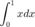

ADAPTIVE OPTICS MODELING WITH OOMAO
Demonstrate how to build a simple closed-loop single conjugated adaptive optics system
Contents
New section with equations
% This is my equation

% This is the code to produce it a=2; %this is the output a
Definition of the atmosphere
% The atmosphere class constructor has 2 required input: % % * the wavelength [m] % * the Fried parameter for the previously given wavelength [m] % % 1 optionnal input: [m] % % * the outer scale % % and parameter/value pairs of optional inputs: % % * the altitudes of the turbulence layers [m] % * the fractionnal r0 which is the ratio of the r0 at altitude h on the % integrated r0: $(r_0(h)/r_0)^{5/3}$ % * the wind speeds [m/s] % * the wind directions [rd] % % In the following the atmosphere is given for a r0=15cm in V band and an % outer scale of 30m with 3 turbulence layers. atm = atmosphere(photometry.V,0.15,30,... 'altitude',[0,4,10]*1e3,... 'fractionnalR0',[0.7,0.25,0.05],... 'windSpeed',[5,10,20],... 'windDirection',[0,pi/3.,pi]);
Definition of the telescope
The telescope class constructor has 1 required input:
- the telescope diameter [m]
1 optionnal input:
- the central obscuration ratio
and parameter/value pairs of optional inputs:
- the field of view either in arcminute or arcsecond
- the pupil sampling or resolution in pixels
- the atmopheric layer motion sampling time [s]
nPx = 60; tel = telescope(3.6,... 'fieldOfViewInArcMin',2.5,... 'resolution',nPx,... 'samplingTime',1/100);
Definition of a calibration source
The source class constructor has parameters/value pairs of optional inputs:
- the zenith angle [rd] (default: 0rd)
- the azimuth angle [rd] (default: 0rd)
- the wavelength [m] (default: V band)
- the magnitude
In the following, an on-axis natural guide star in V band is defined.
ngs = source('wavelength',photometry.R);
Definition of the wavefront sensor
Up to now, only the Shack--Hartmann WFS has been implemented in OOMAO. The shackHartmann class constructor has 2 required inputs:
- the number of lenslet on one side of the square lenslet array
- the resolution of the camera
and 1 optionnal input:
- the minimum light ratio that is the ratio between a partially illuminated subaperture and a fully illuminated aperture
nLenslet = 10;
wfs = shackHartmann(nLenslet,nPx,0.75);
%wfs = pyramid(nLenslet,nPx,'modulation',6);
Propagation of the calibration source to the WFS through the telescope
ngs = ngs.*tel*wfs;
Selecting the subapertures illuminated at 75% or more with respect to a fully illuminated subaperture setValidLenslet(wfs) %% % A new frame read-out and slopes computing: +wfs; %% % Setting the reference slopes to the current slopes that corresponds to a % flat wavefront wfs.referenceSlopes = wfs.slopes;
wfs.INIT
A new frame read-out and slopes computing:
+wfs;
The WFS camera display:
figure subplot(1,2,1) imagesc(wfs.camera)
The WFS slopes display:
subplot(1,2,2) slopesDisplay(wfs)
Definition of the deformable mirror
The influence functions are made of two cubic Bezier curves. This parametric influence function allows modeling a large range of influence function types. As examples two influence functions are pre--defined, the "monotonic" and "overshoot" models. The second parameter is the mechanical coupling between two adjacent actuators
bif = influenceFunction('monotonic',50/100);
Cut of the influence function
figure show(bif)
The deformableMirror constructor class has 1 required input:
- the number of actuator on one side of the square array of actuators
and parameter/value pairs of optional inputs:
- the influence function object (modes)
- the influence function resolution in pixels
- the map of valid actuator
Here, the actuators to lenslets registration obeys Fried geometry so the map of valid actuator in the square can be retrieved from the WFS object
nActuator = nLenslet + 1; dm = deformableMirror(nActuator,... 'modes',bif,... 'resolution',nPx,... 'validActuator',wfs.validActuator);
Interaction matrix: DM/WFS calibration
ngs=ngs.*tel; dmCalib = calibration(dm,wfs,ngs,ngs.wavelength/40); % The influence functions are normalized to 1, the actuator are then % controlled in stroke in meter, here we choose a half a wavelength stroke. % stroke = ngs.wavelength/2; % %% % % The DM actuator commands or coefficients is set to an identity matrix % % scaled to the required stroke; each column of the matrix is one set of % % actuator coefficients (commands) % dm.coefs = eye(dm.nValidActuator)*stroke; % %% % % Propagation of the source through the telescope and the DM to the WFS % ngs=ngs.*tel*dm*wfs; % %% % % The source has been propagated through the DM as many times as the number % % of column in the DM coefficients matrix. As a result, the slopes in the % % WFs object is also a matrix, each column correspond to one actuactor. The % % interaction matrix is then easily derived from the slopes: % interactionMatrix = wfs.slopes./stroke; % figure(10) % subplot(1,2,1) % imagesc(interactionMatrix) % xlabel('DM actuators') % ylabel('WFS slopes') % ylabel(colorbar,'slopes/actuator stroke') % % % %% Command matrix derivation % % The command matrix is obtained by computing first the singular value % % decomposition of the interaction matrix, % [U,S,V] = svd(interactionMatrix); % eigenValues = diag(S); % subplot(1,2,2) % semilogy(eigenValues,'.') % xlabel('Eigen modes') % ylabel('Eigen values') % %% % % the 4 last eigen values are filtered out % nThresholded = 4; % iS = diag(1./eigenValues(1:end-nThresholded)); % [nS,nC] = size(interactionMatrix); % iS(nC,nS) = 0; % %% % % and then the command matrix is derived. % commandMatrix = V*iS*U'; dmCalib.nThresholded = 5; commandMatrix = dmCalib.M;
The closed loop
Combining the atmosphere and the telescope
tel = tel+atm; figure imagesc(tel)
Resetting the DM command
dm.coefs = 0;
Propagation throught the atmosphere to the telescope
ngs=ngs.*tel;
Saving the turbulence aberrated phase
turbPhase = ngs.meanRmPhase;
Propagation to the WFS
ngs=ngs*dm*wfs;
Display of turbulence and residual phase
figure(11) h = imagesc([turbPhase dm.surface ngs.meanRmPhase]); axis equal tight colorbar snapnow
Closed loop integrator gain:
loopGain = 0.5;
closing the loop
nIteration = 200; total = zeros(1,nIteration); residue = zeros(1,nIteration); tic for kIteration=1:nIteration % Propagation throught the atmosphere to the telescope, +tel means that % all the layers move of one step based on the sampling time and the % wind vectors of the layers ngs=ngs.*+tel; % Saving the turbulence aberrated phase turbPhase = ngs.meanRmPhase; % Variance of the atmospheric wavefront total(kIteration) = var(ngs); % Propagation to the WFS ngs=ngs*dm*wfs; % Variance of the residual wavefront residue(kIteration) = var(ngs); % Computing the DM residual coefficients residualDmCoefs = commandMatrix*wfs.slopes; % Integrating the DM coefficients dm.coefs = dm.coefs - loopGain*residualDmCoefs; % Display of turbulence and residual phase set(h,'Cdata',[turbPhase,ngs.meanRmPhase]) drawnow end toc snapnow u = (0:nIteration-1).*tel.samplingTime; atm.wavelength = ngs.wavelength;
Piston removed phase variance
totalTheory = phaseStats.zernikeResidualVariance(1,atm,tel); atm.wavelength = photometry.V;
Phase variance to micron rms converter
rmsMicron = @(x) 1e6*sqrt(x).*ngs.wavelength/2/pi; figure(12) plot(u,rmsMicron(total),u([1,end]),rmsMicron(totalTheory)*ones(1,2),u,rmsMicron(residue)) grid legend('Full','Full (theory)','Residue',0) xlabel('Time [s]') ylabel('Wavefront rms [\mum]')
WFS noise
Noise can be added to the wavefront sensor but first we need to set the star magnitude.
ngs.magnitude = 10;
It can be useful to know the number of photon per subaperture. To do so, let separate the atmosphere from the telescope
tel = tel - atm;
re-propagate the source,
ngs = ngs.*tel*wfs;
and display the subaperture intensity
figure intensityDisplay(wfs)
Now the readout noise in photo-electron per pixel per frame rms is set
wfs.camera.readOutNoise = 5;
Photon-noise is enabled.
wfs.camera.photonNoise = true;
A pixel threshold is defined
wfs.framePixelThreshold = 5;
The loop is closed again
nIteration = 200; total = zeros(1,nIteration); residue = zeros(1,nIteration); dm.coefs = 0; tel = tel + atm; for kIteration=1:nIteration % Propagation throught the atmosphere to the telescope, +tel means that % all the layers move of one step based on the sampling time and the % wind vectors of the layers ngs=ngs.*+tel; % Saving the turbulence aberrated phase turbPhase = ngs.meanRmOpd; % Variance of the atmospheric wavefront total(kIteration) = var(ngs); % Propagation to the WFS ngs=ngs*dm*wfs; % Variance of the residual wavefront residue(kIteration) = var(ngs); % Computing the DM residual coefficients residualDmCoefs = commandMatrix*wfs.slopes; % Integrating the DM coefficients dm.coefs = dm.coefs - loopGain*residualDmCoefs; % Display of turbulence and residual phase set(h,'Cdata',[turbPhase,2*dm.surface.*tel.pupil,ngs.meanRmOpd]) drawnow end
Updating the display
set(0,'CurrentFigure',12) hold on plot(u,rmsMicron(total),'b--',u,rmsMicron(residue),'r--') legend('Full','Full (theory)','Residue','Full (noise)','Residue (noise)',0)